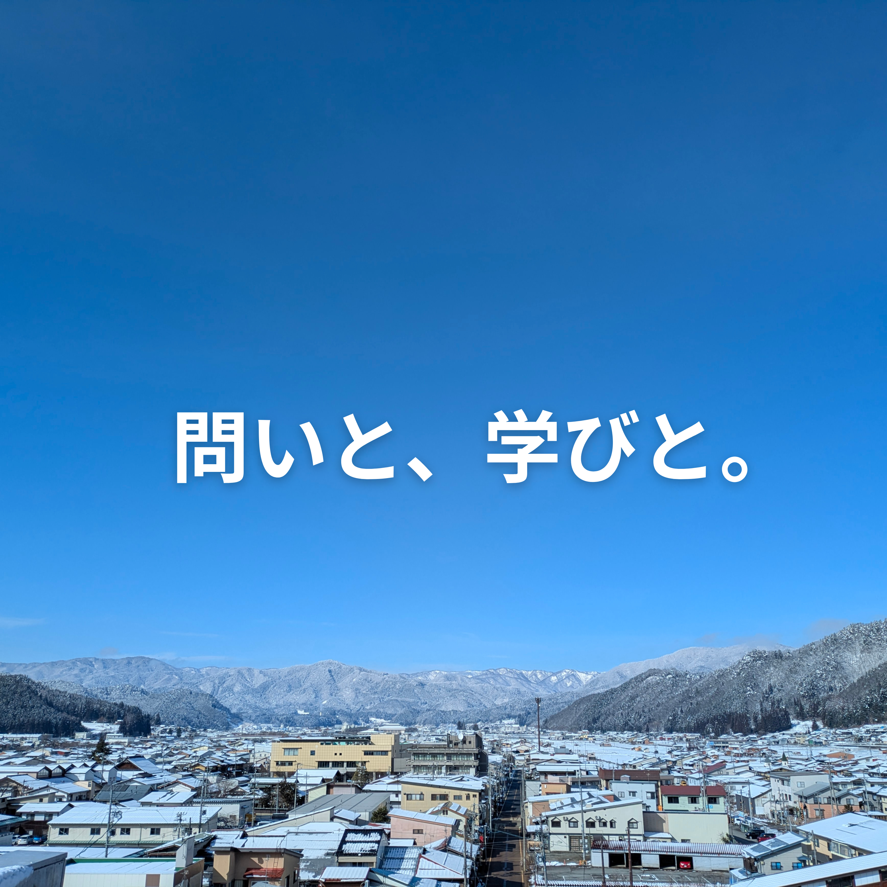
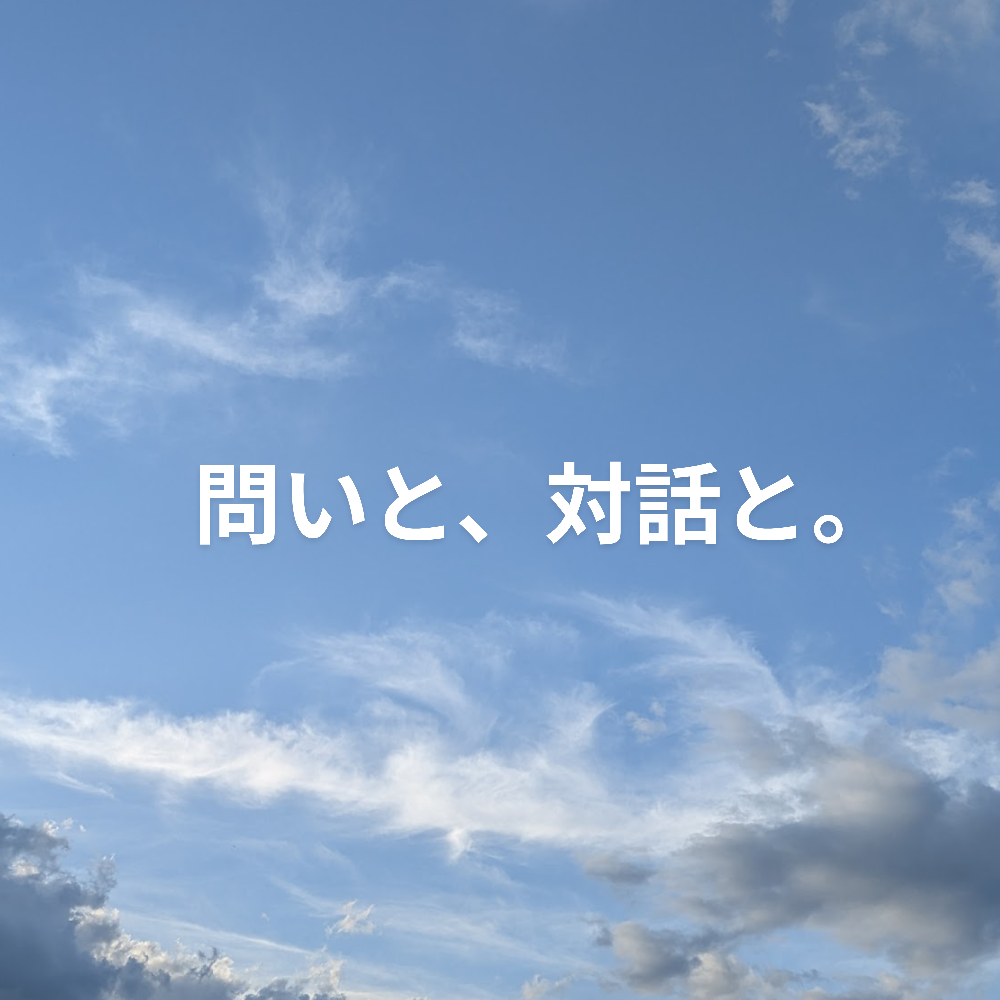
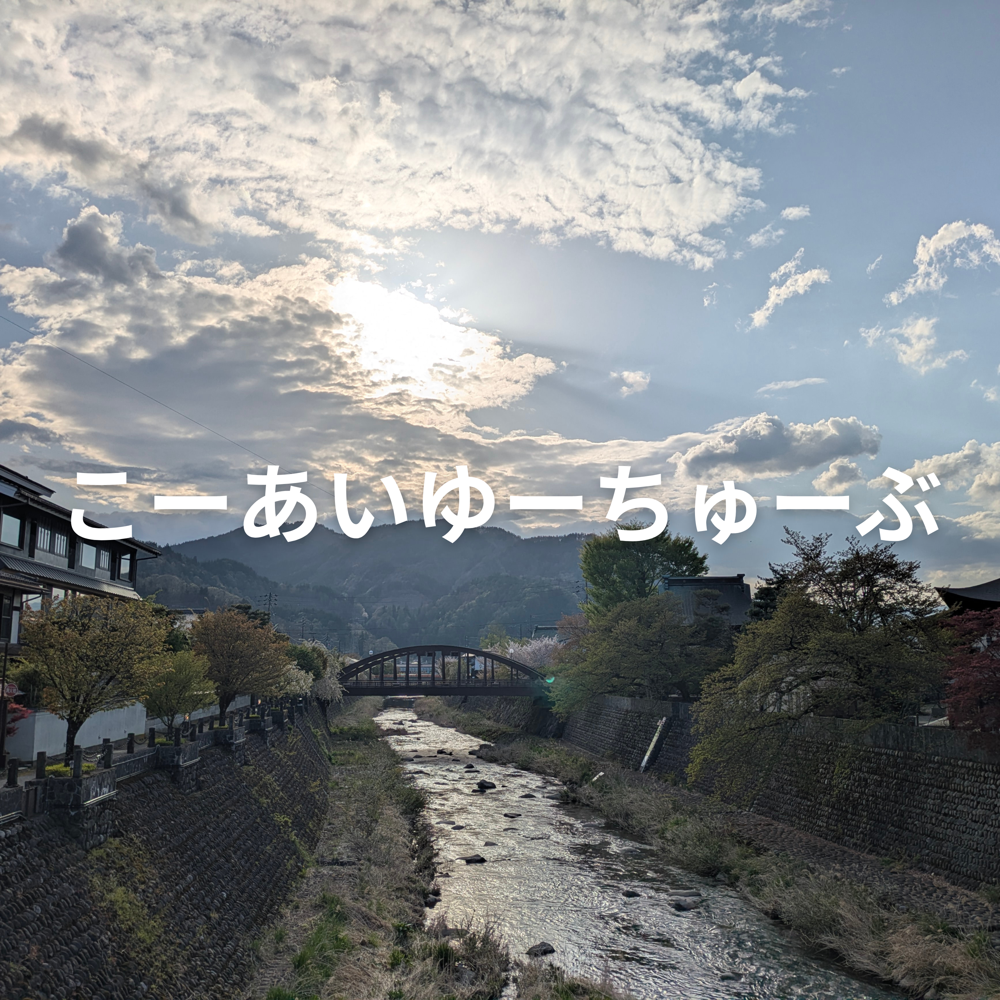

私のデザインは常に変化し続ける。
2007年、大阪生まれ。Co-Innovation University 1期生。N高等学校でデザイン、プログラミング、プレゼンテーションに関心を広げ、現在は生成AIやテクノロジーを活用しながら、教育、地域、組織づくりについて実践的に学んでいる。
中学時代には、長野県で2年間の山村留学を経験。自然体験や地域での暮らし、異年齢の集団生活を通して、自分の価値観が大きく変わった。そこで教育や学びのあり方に関心を持ち、教職員とともに集会の企画・運営にも関わる。
中学3年生で地元大阪に戻った後、教育の現場を学生の視点から発信するためにnoteを開設。教育イベントへの参加や企画を重ねながら、「学びは誰かに与えられるものではなく、自分で問いを立て、動きながらつくっていくものだ」と考えるようになる。
N高等学校では、学校生活の中にある「めんどくさい」を解決するため、仲間とともに出席フォーム自動化ツールを開発。デザインや広報、フロントエンドを担当し、学内コンテストで評価を受けた。現在も、ツール開発や発信活動を通して、学びの環境そのものをどう更新できるかを探っている。
ポリシーは、経歴を積み上げることではなく、「今、何を問い、どう動いているか」を大切にすること。過去の経験を肩書きとして語るのではなく、今の実践にどうつなげるかを考え続けている。

CoIUでの学び、飛騨古川での生活、生成AIとの向き合い方、自分の問いや違和感を文章として残している活動です。完成された答えを発信する場ではなく、日々の経験から考えたことを言語化し、学びの過程そのものを共有する場です。

CoIUの学生同士で、学び・生活・地域・進路・違和感について話す音声コンテンツです。一人で考えた結論を語るのではなく、対話の中で考えが変わったり、問いが深まったりする過程を大切にしています。

CoIUでの学びや学生生活を、映像を通して外に伝える活動です。大学の説明だけでは伝わりにくい空気感、学生の表情、飛騨古川での暮らし、プロジェクトの様子を記録し、新設大学で学ぶリアルを届けます。
お気軽にお問い合わせください。